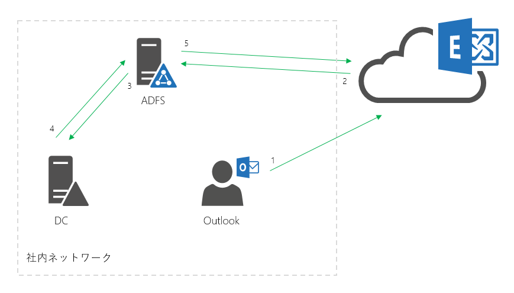
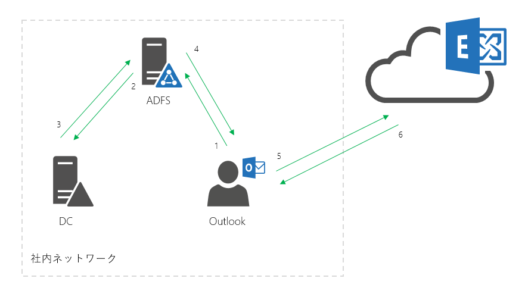

ADFS (Active Directory Federation Services) やサード パーティーの ID プロバイダーを使用するシングル サインインの構成においては、Outlook クライアントから Exchange Online に接続をする際に、認証処理のためにこれらの認証サーバーに対して問い合わせが発生します。(シングル サインオンを利用しない場合は Office 365 の Azure AD にて認証処理が完結しています。)
しかしながら、クラウド サービス側やクライアント側で認証処理に成功したキャッシュが残っている場合は、認証サーバーへの問い合わせを省き、過去の認証キャッシュを利用して接続を完了させる動作がございます。
今回はこの認証キャッシュの動作について説明します。「従来の認証の場合」 そして 「先進認証 (Modern Authentication) の場合」 の 2 つに分けてご紹介します。
従来の認証の場合
Exchange Online の動作として、最大 24 時間キャッシュを保存します。サーバー側で保持できる容量を超えた場合に古いキャッシュから削除されることから、Exchange Online のサーバー側の使用状況によって保持時間は異なります。 その他 Outlook と Exchange Online の接続において認証キャッシュが使用できる条件は複合的な要素を含むため、すべてのシナリオを標準化してご案内することは困難ですが、実際に認証キャッシュが使用できる期間は24 時間以内で前後します。また、前述の通り Exchange Online 側で保持する認証キャッシュが有効な間は、認証サーバー (ADFS など) の認証なしでログインすることができます。
以下は認証フローの参考図となります。
* クライアントからのアクセスを受けてトークンの要求と発行が行われる動作にフォーカスして簡略化した図となります。
{kind=link}

先進認証 (Modern Authentication) の場合
下記の公開情報に記載があります 「先進認証 (Modern Authentication)」 を利用される場合は、認証成功時にクライアント側に保存されるトークン情報によって認証サーバーへの問い合わせをせずに、Exchange Online にアクセスすることができます。 このトークンの有効期間については公開情報内の 「Azure Active Directory (先進認証が有効である Office 2013 Windows クライアントにより使用される)」 をご確認ください。
Title: Office 365 のセッション タイムアウト
URL: https://support.office.com/ja-jp/article/37a5c116-5b07-4f70-8333-5b86fd2c3c40
以下は先進認証の認証フローの参考図となります。
* 前項の図との比較のために、簡略化した図となります。実際には 「従来の認証」 と同様に 1 の前に Exchange Online へのアクセスが発生しますが、この図はその後のトークン取得の処理にフォーカスして記載しています。
{kind=link}
